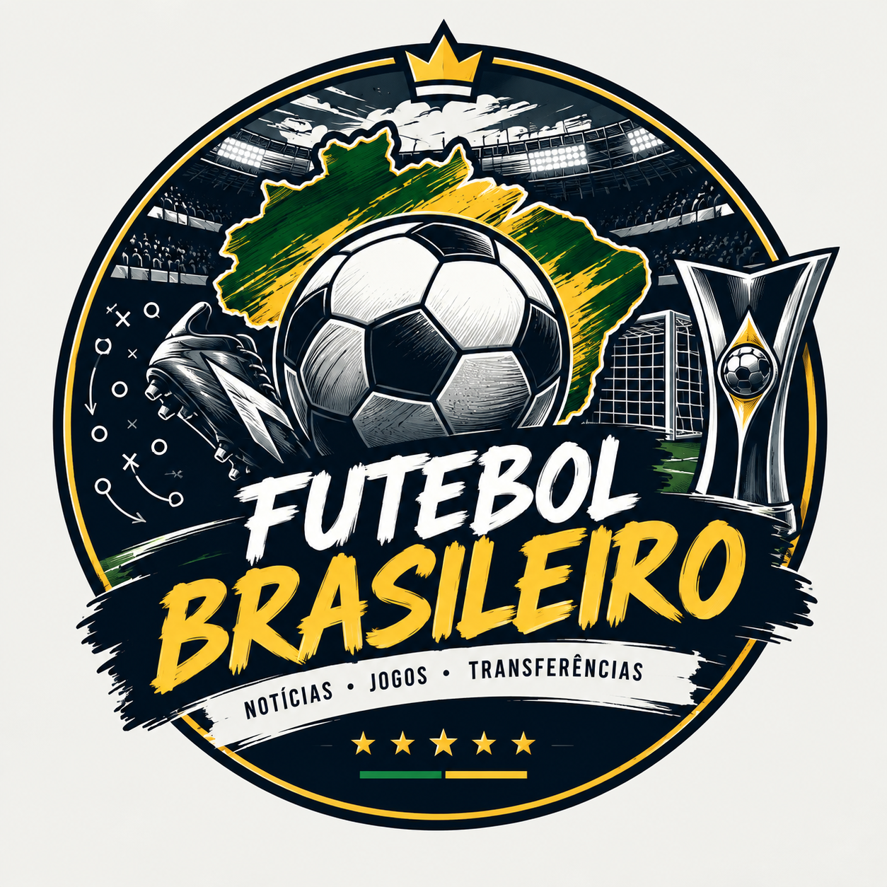

O Pontapé Inicial: O que você vai encontrar no Almanaque da Bola
Por: Miguel Virissimo
O Pontapé Inicial: Conheça o Almanaque da Bola! Seja muito bem-vindo ao Almanaque da Bola, o seu novo ponto de encontro com o futebol brasileiro! Este espaço nasceu para quem respira o esporte mais popular do país e não passa um dia sem acompanhar a rodada. O que você vai encontrar por aqui: Análises e Estatísticas: O desempenho tático dos times e o raio-X dos campeonatos. Notícias e Bastidores: Tudo sobre o Brasileirão, Copa do Brasil e o mercado da bola. Histórias e Recordes: Resgates marcantes e curiosidades do futebol do nosso país. O Almanaque da Bola também é seu. Fique à vontade para debater nos comentários, defender o seu time e participar dessa grande mesa redonda virtual. O apito inicial foi dado e a bola já está rolando. Fique de olho nos próximos posts!
Fonte: Confederação Brasileira de Futebol (CBF) — informações gerais sobre o futebol brasileiro.

O que esperar do futebol brasileiro nesta temporada?
Por: Miguel Virissimo
O futebol brasileiro está sempre cheio de novidades. Com grandes clubes disputando o Brasileirão e a Copa do Brasil, cada rodada promete muita emoção e grandes jogos. Além das competições, o mercado da bola também movimenta os torcedores, com contratações, transferências e novos jogadores ganhando destaque. Durante a temporada, vamos acompanhar os principais acontecimentos, resultados, notícias e tudo que movimenta o futebol brasileiro. A bola está rolando. E aqui você fica por dentro de tudo!
Fonte: CBF — calendário e competições do futebol brasileiro em 2026.
Mercado da bola agita o Futebol Brasileiro
Por: Miguel Virissimo
O mercado da bola é um dos assuntos que mais movimentam os torcedores. Durante a temporada,os clubes brasileiros estão sempre em busca de novos jogadores para fortalecer seus elencos e aumentar as chances de conquistar títulos. As contratações de grandes jogadores costumam gerar muita expectativa, enquanto possíveis saídas também preocupam as torcidas. Além disso, jovens talentos podem ganhar espaço e se tornar importantes para suas equipes. As negociações, rumores e anúncios oficiais movimentam as redes sociais e fazem parte da rotina do futebol brasileiro. Quem será o próximo grande reforço? Continue acompanhando o blog para ficar por dentro das principais novidades, contratações e movimentações do futebol brasileiro!!
Fonte: ge — Central do Mercado, com acompanhamento das negociações dos clubes brasileiros.